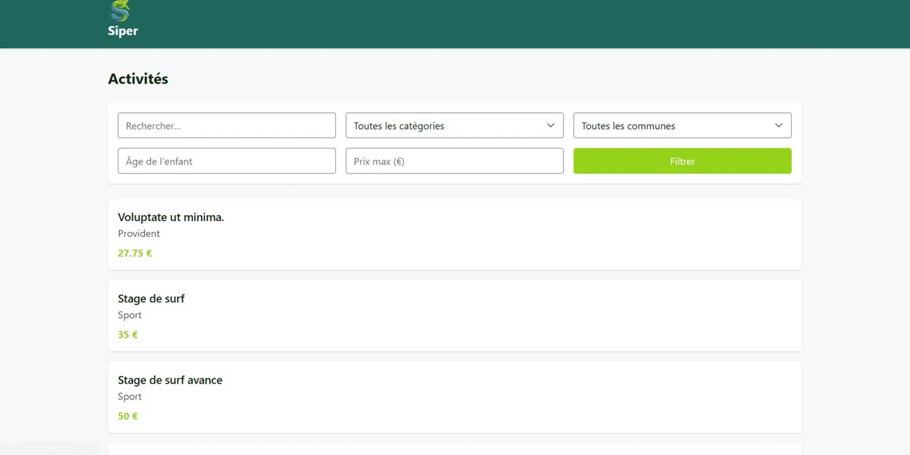
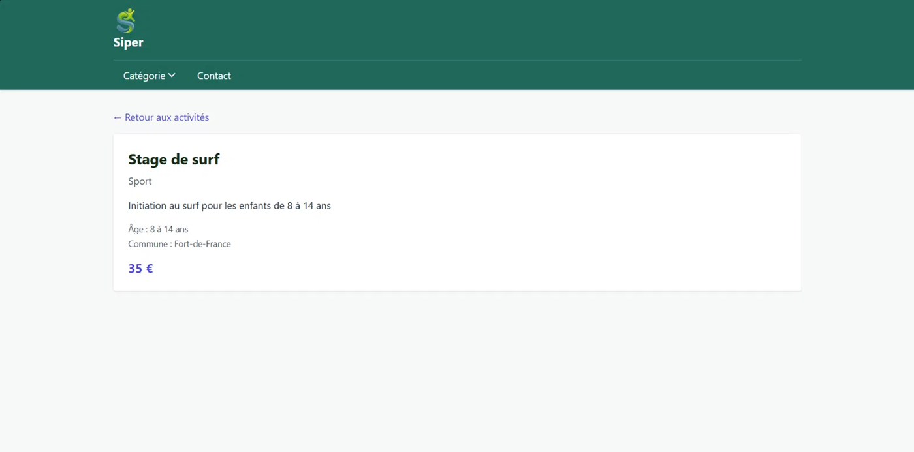
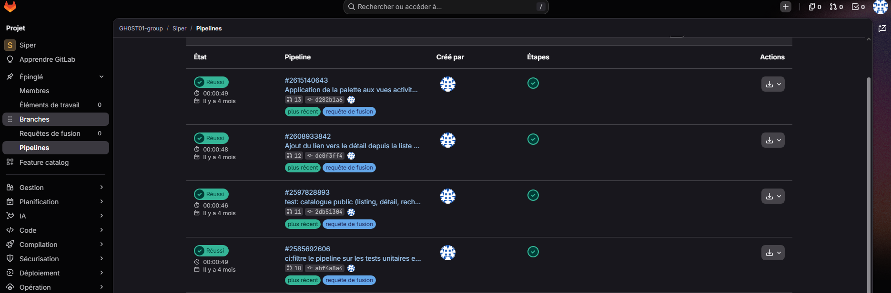
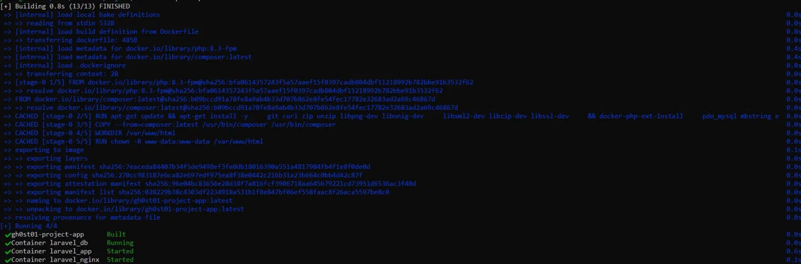
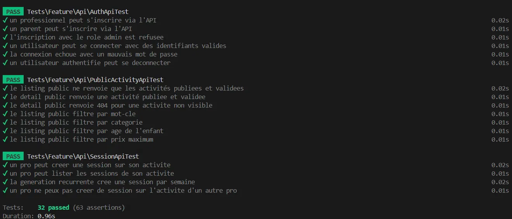
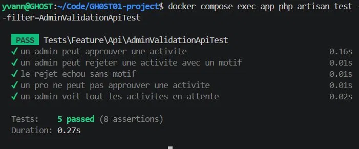

Mes Stages
Dans le programme du BTS SIO spécialisation SLAM, les étudiants sont requis de compléter deux stages pratiques au cours de leur formation, aboutissant à la rédaction d'un rapport final. L'objectif de ce rapport est de mesurer les compétences et connaissances développées par les étudiants au fil de ces expériences, en prenant en compte les thématiques traitées.
Pendant mes deux années de formation, j'ai effectué trois stages : au CAMPUS de Schoelcher, au lycée Joseph Gaillard, puis sur le projet Siper, réalisé à distance pour une structure matricielle. Ces expériences m'ont permis d'approfondir mes connaissances dans les langages et frameworks tels que PHP et Laravel, ainsi que de développer mes compétences en gestion de projets et en résolution de problèmes.
Stage sur le projet Siper
// Contexte
Siper est une marketplace d'activités pour enfants en Martinique : des structures professionnelles (sport, loisirs créatifs, stages vacances, soutien scolaire, musique, danse…) y publient leurs activités, et les parents les consultent et y inscrivent leurs enfants. Le projet est développé en équipe, avec trois rôles : administrateur, professionnel et parent.
// Missions
- Mise en place de l'environnement : Docker (PHP-FPM 8.3, Nginx, MySQL 8), séparation des hôtes
siper.localetapi.siper.local, CORS restreint. - API REST Laravel 11 : inscription, connexion et déconnexion (Sanctum), rôles et permissions (Spatie Permission).
- CRUD des activités, des catégories, des communes et des sessions, avec génération de sessions récurrentes.
- Autorisations par Policies et validation des activités par l'administrateur (approbation ou rejet motivé).
- Catalogue public : liste, détail, recherche et filtres (âge…), vues Blade avec Alpine.js, palette de couleurs et logo Siper.
- Qualité : tests Pest, pipeline GitLab CI, travail par branches de fonctionnalités et merge requests.
- Documentation : README, CLAUDE.md et .env.example pour permettre à un autre développeur de lancer le projet.
// Technologies utilisées
Laravel 11 · Breeze · Sanctum · Spatie Permission · MySQL 8 · Docker · Nginx · Alpine.js · Vite · Pest · Git / GitLab CI
// Captures d'écran





